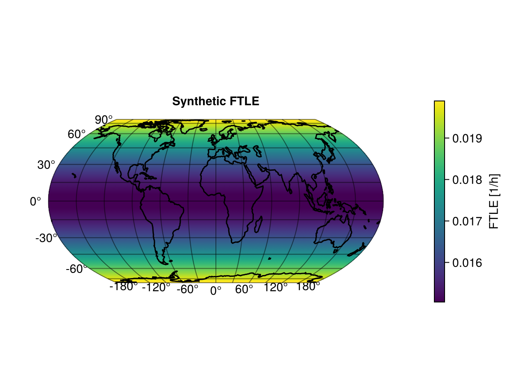
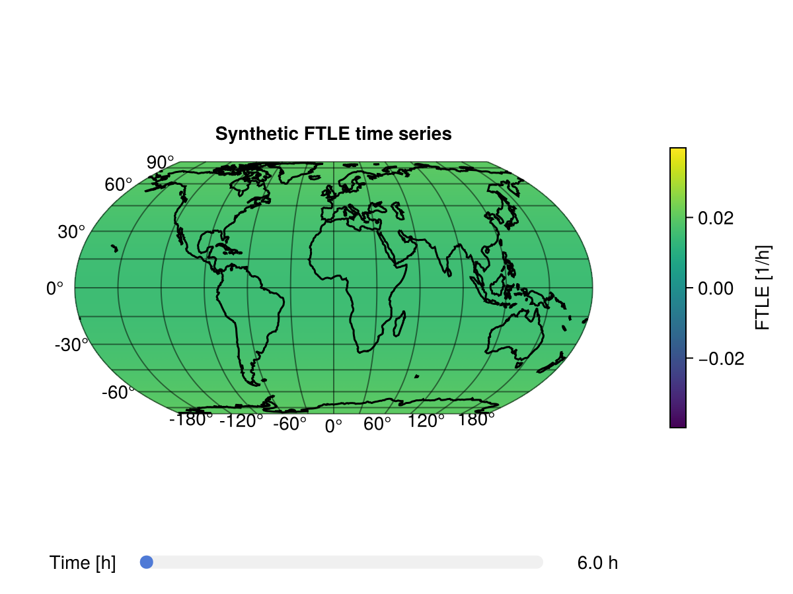
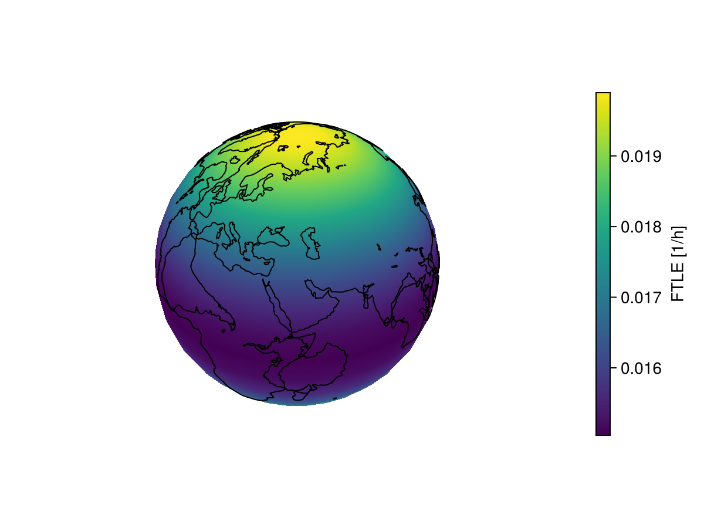

Plotting
The plotting helpers convert FTLE vectors or time-series matrices into RingGrids.Field objects and then interpolate them onto a regular longitude and latitude grid for GeoMakie.
Use CairoMakie in scripts and documentation builds, or GLMakie locally when you want interactive windows.
Plot One Output Time
surface_plot accepts an FTLEResult, an FTLE vector plus a grid, an FTLE matrix plus a grid, or a RingGrids.Field.
using CairoMakie
using RingGrids
using SpeedyWeatherFTLE
spatial_grid = FullGaussianGrid(8)
londs, latds = RingGrids.get_londlatds(spatial_grid)
synthetic_ftle = @. 0.015 + 0.005 * sind(latds)^2
fig, ax, sp, cb = surface_plot(
synthetic_ftle,
spatial_grid;
title = "Synthetic FTLE",
label = "FTLE [1/h]",
)
fig
If you have an FTLEResult, this is enough:
fig, ax, sp, cb = surface_plot(result; label = "FTLE [1/h]")Plot a Time Series
slider_plot accepts the result object directly or the tuple-style output from get_FTLE.
time_hours = [6.0, 12.0, 18.0]
FTLE_grid_time = hcat(synthetic_ftle, 1.5 .* synthetic_ftle, 2 .* synthetic_ftle)
fig, ax, sp, cb = slider_plot(
time_hours,
FTLE_grid_time,
spatial_grid;
title = "Synthetic FTLE time series",
colorbar_label = "FTLE [1/h]",
)
fig
For result objects:
fig, ax, sp, cb = slider_plot(
result;
title = "FTLE time series",
colorbar_label = "FTLE [1/h]",
)The zero-duration tracker sample is skipped by default because FTLE is undefined at t = 0. Pass start_index = 1 if you explicitly want to include that column.
Record a Slider Animation
animate_slider_plot records an animation by advancing the same slider used by slider_plot. The documentation build uses CairoMakie so this works in CI without opening a GL window.
animation_path = joinpath(mktempdir(), "synthetic-ftle-slider.gif")
animate_slider_plot(
animation_path,
time_hours,
FTLE_grid_time,
spatial_grid;
framerate = 2,
title = "Synthetic FTLE animation",
colorbar_label = "FTLE [1/h]",
coastlines = false,
)
isfile(animation_path), filesize(animation_path) > 0(true, true)For local interactive use, activate GLMakie before making the plot:
using GLMakie
fig, ax, sp, cb = slider_plot(
result;
title = "Interactive FTLE time series",
colorbar_label = "FTLE [1/h]",
)
display(fig)
animate_slider_plot("ftle-slider.mp4", result; framerate = 12)Plot an Interactive Globe
globe_plot uses GeoMakie's GlobeAxis. In this documentation build it renders as a static CairoMakie figure; locally with GLMakie the returned globe can be rotated and zoomed.
fig, ax, sp, cb = globe_plot(
synthetic_ftle,
spatial_grid;
lon = collect(-180:10:180),
lat = collect(-90:10:90),
title = "Synthetic FTLE globe",
label = "FTLE [1/h]",
)
fig
The same overloads as surface_plot are available:
globe_plot(result; label = "FTLE [1/h]")
globe_plot(FTLE_grid_time, spectral_grid; time_index = 3)
globe_plot(final_ftle(result), result.spectral_grid)For an interactive local globe:
using GLMakie
fig, ax, sp, cb = globe_plot(
result;
title = "Interactive FTLE globe",
label = "FTLE [1/h]",
)
display(fig)Convert Without Plotting
Use ftle_field when you want a RingGrids.Field for your own plotting or interpolation code:
field_ts = ftle_field(FTLE_grid_time, spatial_grid)
field_final = ftle_field(FTLE_grid_time[:, end], spatial_grid)
field_from_result = ftle_field(result; time_indices = :last)